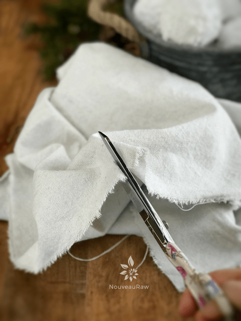
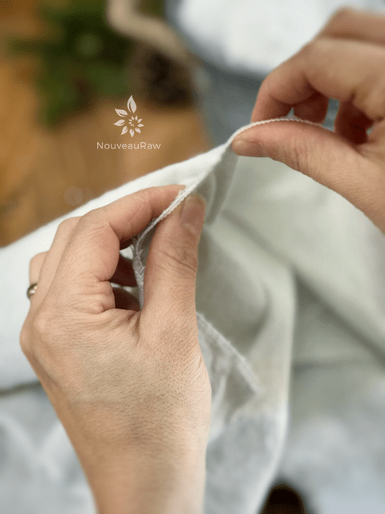
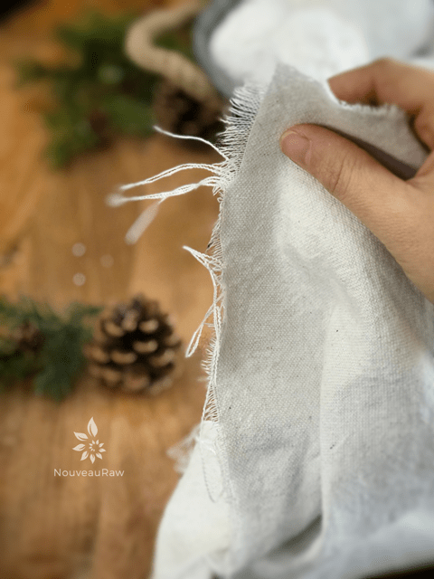
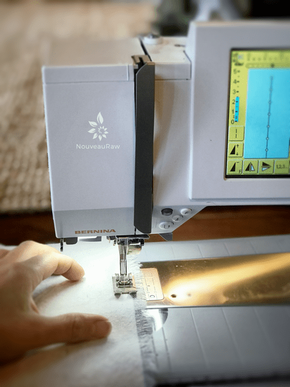
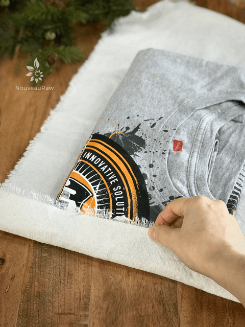
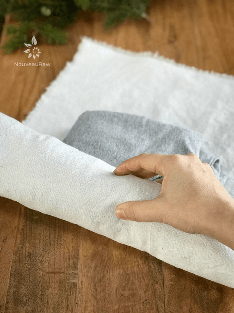

Drop Cloth Wrapping Paper
‘Tis the season for wrapping and unwrapping… and unfortunately, waste.
Did you know that most wrapping paper can’t be recycled? This is because most often it is dyed, laminated or contains non-paper additives, like gold and silver colored shapes, glitter or plastics, which can’t be recycled. Recycling rules vary from place to place, so it’s always worth double checking with your local authority what they will take.
I started creating cloth wrapping in 2014 after I learned just how much Christmas paper went into the landfill each year! Mind-blowing! But it just doesn’t start and end with Christmas, each gift-giving celebration brings, even more, wrapping paper into the landfill. Think of how many birthdays are in the world! I read that about 17.7 million people are celebrating a birthday on any given day of the year. Yea, I know… I sat down in disbelief when I read that too.
So, as I was saying, I started this new tradition for our family back in 2014. There have been learning curves and adjustments. I guess there always is when we go through change. But that’s ok; change brings awareness and growth.
I decided to create another posting since I am using painters drop cloths this year for my wrapping paper. It’s cheap, neutral in color (good for any celebration), and you can just fray the edges and skip using a sewing machine if you want. I do add a simple straight stitch on all four edges, so the fraying doesn’t continue but even if you don’t own a sewing machine, drop cloths are pretty amazing to use. AND another perk is that there isn’t a right or wrong side, so that makes it even easier when wrapping gifts. You don’t even have to make sheets of fabric wrap is to make simple bags as I did below. Sew up three sides, gather the opening, and secure with some twine or ribbon. These do require some sewing so again, do what you can, with what you have.
Where do I get a drop cloth?
Just about any hardware store sells them… even the big box stores like Walmart. BUT I have found that I really like the ones from Home Depot. The 8 oz. medium duty Everbilt canvas drop cloth is ideal. Don’t get the heavy duty ones. They are too stiff to work with for a project like this. Outside of making fabric wrapping paper with them, I have been making curtains, pillows, and other crafty items. So, I have done my homework and tried many different brands.
Click (here) to see the one that I am referring to. The reason that I like these over other brands is that they are consistent in quality and you don’t find weird seams running through the cloth. They come in many different sizes, so you can select the size that fits your needs and budget.
How do I prep the drop cloth?
Unlike standard wrapping paper… we have to wash this “paper” hehe. Well, I recommend it. You can skip this process if you wish, but washing will make it softer to work with. I use HOT water and bleach. I then iron it while it is still damp and hang to dry. You can put the cloth in the dryer, after being cut to size, and then iron each piece if you want. Do what works best for you.
Tips on creating and wrapping with cloth:
- Determining the fabric size doesn’t have to be complicated. You can create the fabric wrap as you go or make them up ahead of time. It will take a little adjusting to getting used to this method, but I am confident that the end reward will be well worth it. I premade mine for Christmas, cutting them into various sizes.
- With this type of cloth, you can make a small cut into the fabric and rip it from one end to the other and it keeps a straight edge. Then just start removing strings until you have the deep of fray that you want.
- The main thing that I have learned is to keep the fabric square, regardless of the size. This will make it easier to gather up the sides.
- You will want to hem the edges of the fabric. This will give it a longer life for multiple uses by preventing the edges from raveling. But as I mentioned above…. with drop cloth you can skip this process if you want to.
- Ensure that the fabric is adequate to cover the bottom, sides, and top of your gift. Excess fabric is easier to deal with than not having enough.
- You can’t and don’t want to use tape to secure the fabric. Typical Scotch tape doesn’t stick to fabric and if you use packing tape or lord have mercy, duck tape… it will leave a sticky residue on the fabric which will just collect schmutzig!
- For securing the fabric, you can either tie it, use twine, or ribbon.
- If you want to give a gift to someone outside of your home, explain to them in a note on why you chose fabric to wrap it in and hopefully they will pick up the new tradition.
- If the job feels daunting… invite some friends over who have sewing machines and make a party out of it. Create some raw treats, warm drinks, put some music on and create a beautiful memory! Or if they don’t have sewing machines, but you do, assign one person to cut, one to sew, and one to iron.
- Here is a great video that will help you with some of the basics when it comes to wrapping a box in cloth. Click (here).
- Make sure the fabric you use isn’t see-through. We all love to peek at our gifts… but….
- I timed myself making the wrapping “paper, ” and on average it takes about 6 minutes per fabric wrap. Not bad.
-

-
Start by making a small cut in the fabric.
-

-
Grab ahold of each side of the cut and tear.
-

-
Pull the strings until the amount of frayed edges is achieved.
-

-
Option: Sew a straight line along the edge so it doesn’t fray any further.
-

-
Clothing is really simple to wrap. I think the photos say enough on what I did…
-

-
Roll all the way to the end and tie the ends closed with twine.
© AmieSue.com